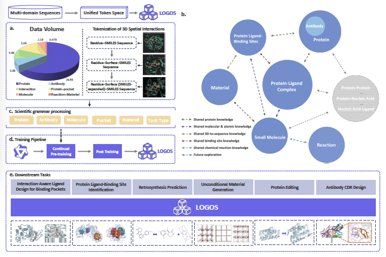
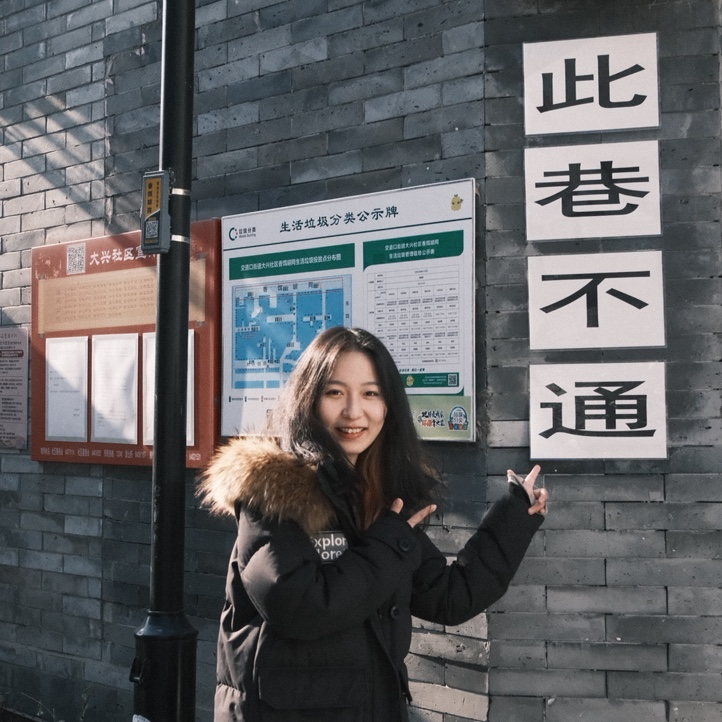
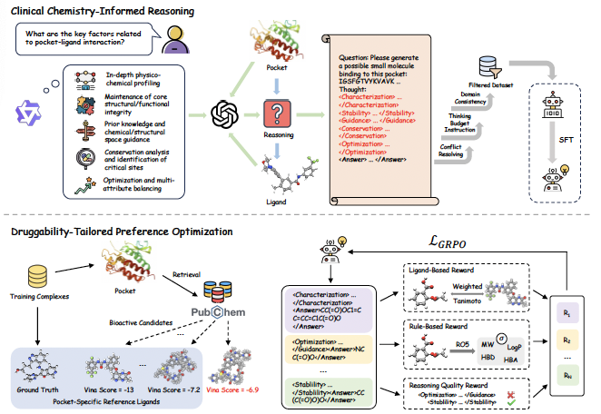
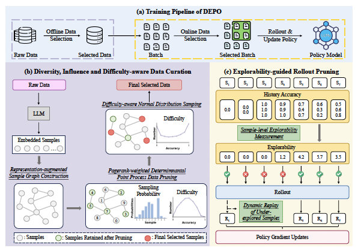
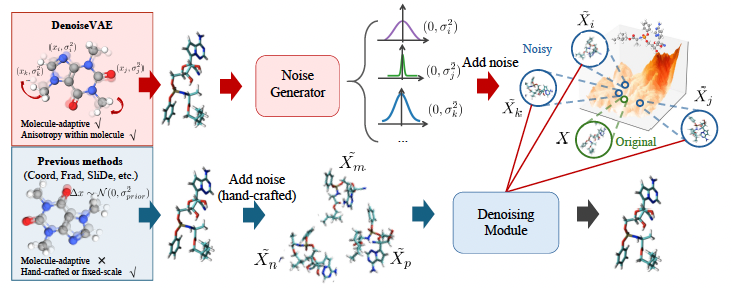
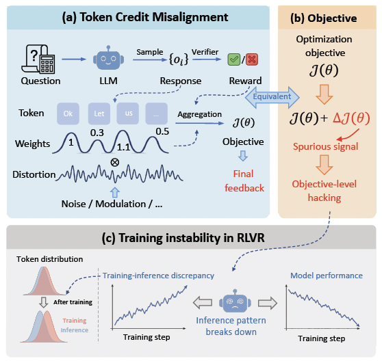
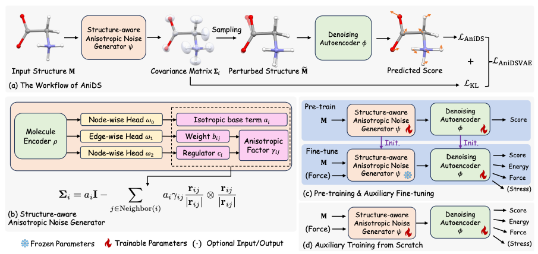

Tongyi technical report 2026
Speaking the Language of Science: Toward a General-Purpose Generative Foundation Model for the Natural Sciences

Ph.D. Student in Artificial Intelligence
Gaoling School of Artificial Intelligence, Renmin University of China
I am a Ph.D. student at the Gaoling School of Artificial Intelligence, Renmin University of China, advised by Prof. Bing Su. I received my B.S. degree from Beijing Normal University in 2023.
My research centers on LLM4Science — building large language models and generative foundation models that speak the language of science — spanning AI for Science, molecular representation learning, and reinforcement learning. I am always open to research collaboration; feel free to reach out.
* denotes equal / core contribution. A full and up-to-date list is on my Google Scholar.






Email is the best way to reach me:
yurouliu99@gmail.com.
Feel free to reach out for discussion and collaboration.